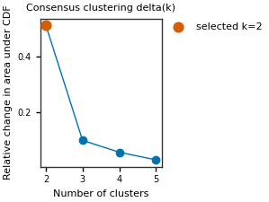
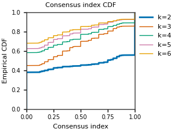
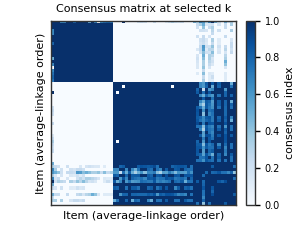
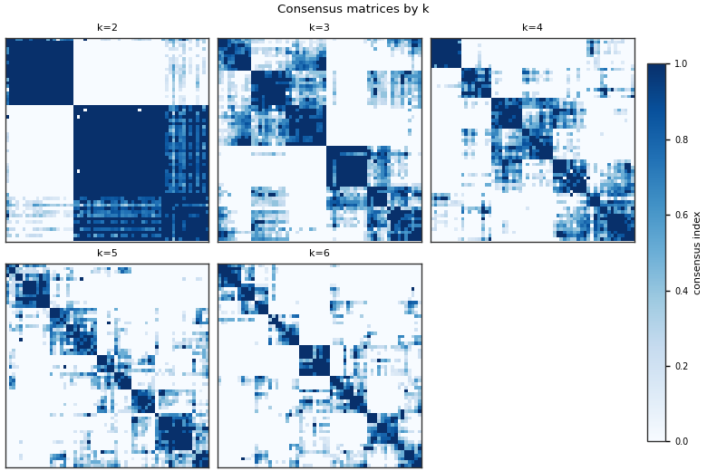
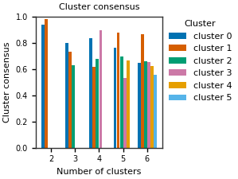
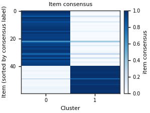
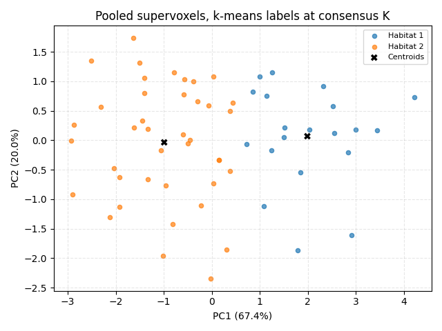
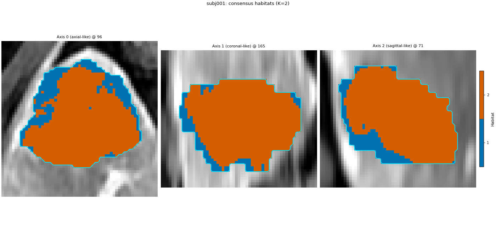

备注
Go to the end 以下载完整示例代码。
生境共识聚类#
背景。 K-means 与高斯混合从分数曲线（inertia、BIC、silhouette 等）选生境数。共识聚类（Monti et al., 2003）问不同问题：对同一超体素多次重采样，哪些对在多次聚类中仍同簇，哪个 K 下共簇最稳定？
许可证。 数值步骤是 InMoose 对 Žiga Sajovic 实现的移植，以 GPL-3.0-or-later 存放于 habit/third_party/inmoose/ 。HABIT 其余部分仍为 Apache-2.0。使用 Spec("consensus") 或 ConsensusHabitatModelFitter 即使用该 GPL 组件。GPL 文本见 habit/third_party/inmoose/LICENSE 。
本页运行内容。 与 聚类算法与生境数 相同的两步法分析，仅改动 fit 阶段。池化后的超体素是条目。自带算法仅对 条目 重采样（不对特征），采用 InMoose 默认比例 0.5。本页使用 20 次重采样、K 从 2 到 6 以便图可读；类默认是 50 次重采样、K 从 2 到 10。 bestK 来自它们在一致性指数 CDF 下面积的相对变化。该曲线止于 max_habitats - 1 ：范围上端永不被选中。这不是 Bioconductor ConsensusClusterPlus（无 PAC、无特征重采样）。
The consensus matrix chooses K. HABIT then fits k-means on every training
supervoxel at that K and paints the map with KMeans.predict, so a
later subject is labelled in the same feature space without rebuilding
the n x n matrix. The consensus-matrix labels stay in the fit report;
they are not the habitat ids.
何时使用。 需在几十到几百超体素上对 K 做稳定性论证时。勿用于体素级矩阵：每个候选 K 保留 n x n 共识矩阵。
警告
habit/third_party/inmoose/ 为 GPL-3.0-or-later。HABIT 的 Apache-2.0 许可证不替代该许可证。
用共识聚类拟合生境#
将 DATA / MODALITIES / ROI 改为你的预处理布局。 fit 是唯一与 k-means 两步运行不同的阶段。sphinx_gallery_thumbnail_number = 3
from pathlib import Path
import matplotlib.pyplot as plt
import numpy as np
from habit.contracts import cohort_from_directory
from habit.datasets import fetch_demo
from habit.recipes import Study
from habit.spec import HabitatSpec, Spec, Stage
from habit.viz import (
plot_consensus_cdf,
plot_consensus_cluster_stability,
plot_consensus_delta,
plot_consensus_item_stability,
plot_consensus_matrices,
plot_consensus_matrix,
plot_habitat_clustering_pca_2d,
plot_habitat_overlay,
)
DATA = fetch_demo()
MODALITIES = ("pre_contrast", "LAP", "PVP", "delay_3min")
ROI = "LAP"
cohort = cohort_from_directory(DATA, modalities=MODALITIES, roi=ROI)
train = cohort[:2]
Path("out").mkdir(exist_ok=True)
spec = HabitatSpec(
name="consensus_clustering",
stages=(
Stage("extract", Spec("raw", {"modalities": list(MODALITIES), "roi": ROI})),
Stage("preprocess", Spec("winsorize", {"winsor_limits": [0.01, 0.01]})),
Stage("preprocess2", Spec("zscore")),
Stage("partition", Spec("kmeans", {"n_supervoxels": 30})),
Stage("pool", Spec("pool")),
Stage(
"fit",
Spec(
"consensus",
{
"min_habitats": 2,
"max_habitats": 6,
"n_resamples": 20,
"resample_proportion": 0.5,
"inner": "kmeans",
"n_init": 10,
},
),
),
Stage("assign", Spec("nearest_centroid")),
),
random_seed=0,
)
result = Study(spec).fit_predict(train)
report = result.habitat_model.preprocessing_state["consensus"]
print(result.habitat_model.summary())
print("license:", report["license"])
print("implementation:", report["implementation"])
print(
"selected k:",
report["selected_k"],
"| centroids:",
result.habitat_model.n_habitats,
"| items:",
report["n_items"],
)
HABIT demo data (cached)
DATA (preprocessed root): C:\Users\dongm\.habit_data\demo-data-v1\preprocessed
On-disk inventory of this folder:
subjects (5): subj001, subj002, subj003, subj004, subj005
image series: LAP, PVP, delay_3min, pre_contrast
mask keys: LAP, PVP, delay_3min, pre_contrast
example image: images/subj001/delay_3min/WATER__BH_Ax_LAVA_Flex_3min_Series0012.nrrd
example mask: masks/subj001/delay_3min/WATER__BH_Ax_LAVA_Flex_10min_Series0017_mask.nrrd
Your own data must use the same folder tree (change IDs / series names):
DATA/
images/<subject_id>/<modality>/<one image file>
masks/<subject_id>/<roi>/<one mask file>
Then load it with the same call the demos use:
cohort = cohort_from_directory(DATA, modalities=("LAP",), roi="LAP")
Swap DATA / modalities / roi to match your tree. Mask key is often the
same as one image series (here LAP).
Cohort.map[_ComputeUnits]: 0%| | 0/2 [00:00<?, ?it/s]
Cohort.map[_ComputeUnits]: 50%|█████ | 1/2 [00:02<00:02, 2.49s/it]
Cohort.map[_ComputeUnits]: 100%|██████████| 2/2 [00:03<00:00, 1.93s/it]
Cohort.map[_ComputeUnits]: 100%|██████████| 2/2 [00:03<00:00, 1.93s/it]
Cohort.map[_AssignPrecomputedUnits]: 0%| | 0/2 [00:00<?, ?it/s]
Cohort.map[_AssignPrecomputedUnits]: 50%|█████ | 1/2 [00:00<00:00, 3.99it/s]
Cohort.map[_AssignPrecomputedUnits]: 100%|██████████| 2/2 [00:00<00:00, 3.98it/s]
Cohort.map[_AssignPrecomputedUnits]: 100%|██████████| 2/2 [00:00<00:00, 3.98it/s]
HabitatModel consensus-6bc294d3e717e8e3
habitats : 2
features (4) : pre_contrast, LAP, PVP, delay_3min
defining cohort : n=2
modalities : pre_contrast, LAP, PVP, delay_3min
cohort digest : cc1b16a34cc7478d...
produced by : habitat_model_fitter.consensus
habit version : 3.0.0
random seed : 0
preprocessing state: consensus
license: GPL-3.0-or-later
implementation: inmoose.consensus_clustering.consensusClustering (GPL-3.0-or-later; Sajovic / Weill / Appe). See habit/third_party/inmoose/LICENSE.
selected k: 2 | centroids: 2 | items: 60
Delta(k)：共识分布变化最大处#
标记点为 vendored 规则的 bestK 。平坦尾部读作“更多簇并未使共识明显更锐”，非 p 值。
fig = plot_consensus_delta(report, title="Consensus clustering delta(k)")
fig.savefig("out/consensus_delta.png", dpi=150, bbox_inches="tight")
plt.show()

共识指数 CDF#
有用的 K 使 CDF 近阶跃：成对体几乎总在一起（指数近 1）或几乎不（近 0）。粗线为所选 K。对角元为 1，与 vendored 面积计算一致。
fig = plot_consensus_cdf(report, title="Consensus index CDF")
fig.savefig("out/consensus_cdf.png", dpi=150, bbox_inches="tight")
plt.show()

所选 K 的共识矩阵#
每个单元格表示在重复抽样中，两个超级体素都被抽取并放置在同一簇中的比例。行按照 1 - consensus 的平均连接排序，因此稳定的群体形成区块。
fig = plot_consensus_matrix(report, title="Consensus matrix at selected k")
fig.savefig("out/consensus_matrix.png", dpi=150, bbox_inches="tight")
plt.show()

每个候选 K 的共识矩阵#
fig = plot_consensus_matrices(report, title="Consensus matrices by k")
fig.savefig("out/consensus_matrices.png", dpi=150, bbox_inches="tight")
plt.show()

簇共识#
对每个簇，其成员对的平均共识指数。柱近 1 为稳定生境；缺口为 singleton，本实现记 NaN。
fig = plot_consensus_cluster_stability(
report, title="Cluster consensus"
)
fig.savefig("out/consensus_cluster_stability.png", dpi=150, bbox_inches="tight")
plt.show()

项共识#
所选 K 下各超体素与各簇一致程度。行按共识标签排序。
fig = plot_consensus_item_stability(report, title="Item consensus")
fig.savefig("out/consensus_item_stability.png", dpi=150, bbox_inches="tight")
plt.show()

Supervoxels in the fitted partition#
Points are pooled supervoxels. Colours are the k-means labels at the consensus-chosen K (shown from 1, matching habitat ids). Crosses are the centres written into the habitat model.
frames = [one.feature_frame().to_numpy(dtype=float) for one in result.units]
matrix = np.vstack(frames)
labels = np.asarray(report["habitat_training_labels"], dtype=int) + 1
centers = np.asarray(result.habitat_model.centroids, dtype=float)
fig = plot_habitat_clustering_pca_2d(
matrix,
labels,
centers=centers,
title="Pooled supervoxels, k-means labels at consensus K",
)
fig.savefig("out/consensus_pca.png", dpi=150, bbox_inches="tight")
plt.show()

图像上的生境图#
KMeans.predict of the fitted centres, on the first training patient.
This is the map a new subject would receive from the saved model.
subject = train[0]
fig = plot_habitat_overlay(
subject.image(ROI),
result.habitat_maps[0],
title=f"{subject.subject_id}: consensus habitats (K={result.habitat_model.n_habitats})",
crop_to="labels",
)
fig.savefig("out/consensus_overlay.png", dpi=150, bbox_inches="tight")
plt.show()

F:\work\habit_project\habit\viz\habitat_overlay.py:806: UserWarning: Display geometry conflict: image/anatomy direction does not match mask/label direction. Using the mask/label direction so coronal/sagittal superior-up follows the labelled anatomy. Pass direction= to override.
resolved_direction, resolved_spacing = resolve_display_geometry(
如何解读结果#
优先选择 CDF 更接近阶跃、共识矩阵有少量暗块、簇共识条远高于 0.5 的 K。
在最后 delta 点（
max_habitats - 1）选中表示该规则下范围过窄。扩大max_habitats并重跑。The overlay is the k-means partition at the chosen K. It can disagree with the consensus-matrix labels in the item-consensus figure: those labels cluster co-membership, and the habitat ids come from the subsequent
KMeans.fit. Say which of the two you interpret.研究中
n_resamples保持默认 50 或更高，并记录describe_methods()与上文 GPL 声明。
接下来去哪里#
同一设计下 k-means 与高斯混合的评分曲线： 聚类算法与生境数 。
产生条目的超体素步骤： 超体素方法与数量 。
保存质心模型并应用于另一队列： 训练、保存并预测新患者 。
Total running time of the script: (0 minutes 11.783 seconds)